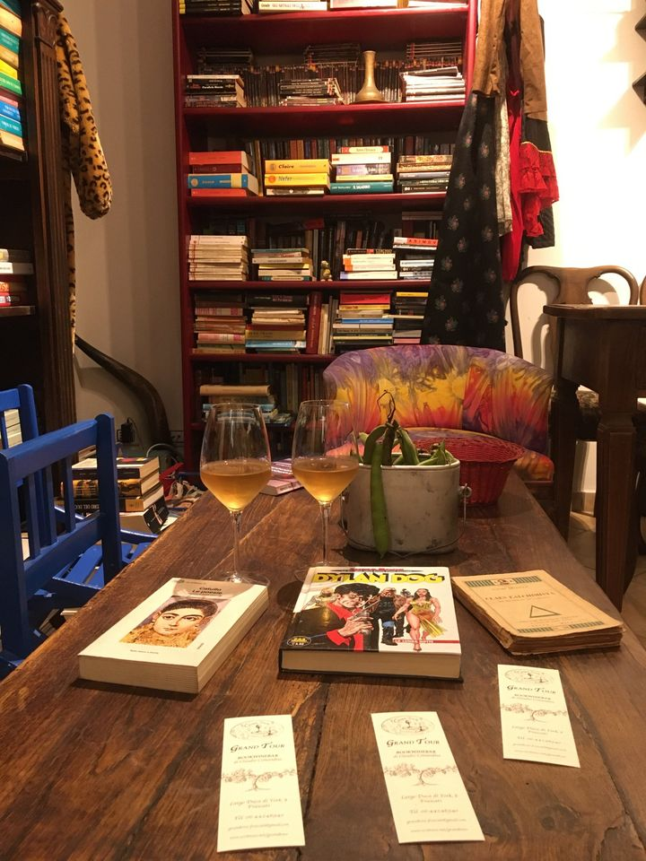
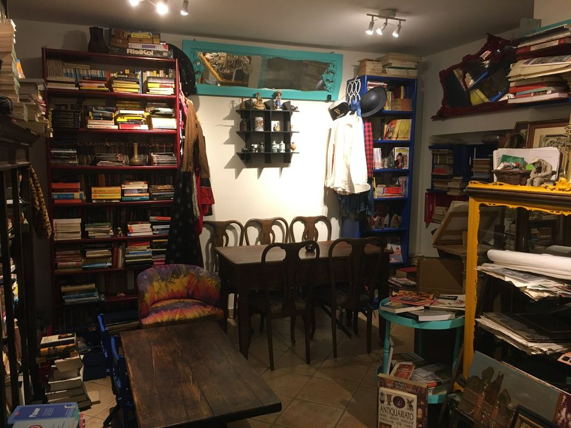
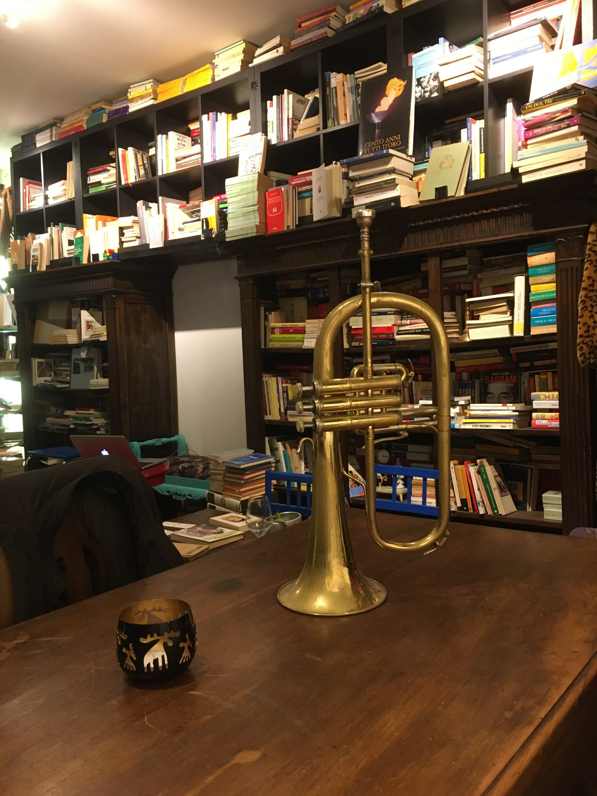

grandtour
Frascati a Largo Duca di York 8
È una libreria, un bar, un circolo: un piccolo spazio che si propone quale tappa di qualsiasi viaggio possibile. Pubblicazioni, oggetti e vestiti usati, prodotti tipici e pregiati, laboratorio di produzioni culturali. È gestito dallo scrittore Claudio Comandini presso il centro storico.

Un luogo dove scovare tra mille volumi rarità editoriali e modernariato librario, è un circolo culturale, una vecchia osteria, un punto di riferimento per chi vuole acquistare oggetti d'arte, mirabilia, vecchie cartoline, pubblicazioni storiche, collezioni di fumetti, oggetti vintage e vestiti usati.
Per chi vuole organizzare reeding letterari nella suggestione della grotta sottostante, incontri culturali, dirette social o semplicemente stare in compagnia ritrovando il gusto della discussione politica o dissacrante.
Ci introduce allo spazio e alle sue suggestioni il murales realizzato all'ingresso dallo street artist Stefano Salvi, che tra le diverse soluzioni presenta una decostruzione delle colonne d'Ercole del teatro delle fontane di Villa Aldobrandini.
La festa d’apertura

Frascati
ore 17:30.
Un caldo 12 maggio a Largo Duca di York, civico 8. Un piccolo e prezioso spazio di cultura libera e indipendente. Grand Tour BookWineBar di Claudio Comandini. Stupisce l’ingresso con una sorta di portale verso una dimensione parallela. Sulla facciata, una composizione tra psichedelia e decostruzionismo di Stefano Salvi, con le Colonne d'Ercole del Teatro delle Fontane di Villa Aldobrandini che diventano elementi: fuoco, aria, terra - e al posto di acqua, vino. L’allestimento interno è peculiare e accogliente. Un'energia propositiva invita a sostare. Un libreria letteralmente colma di pubblicazioni di ogni tipo, organizzate per riquadri e settori, spicca l'offerta del cesto rosso dedicato alla "crisi della sinistra in svendita". Tra gli scaffali, qualcuno potrà trovare anche un fumetto gradito, e per il vinile un piccola scelta di prestigio. Inoltre, oggetti e abiti vintage irresistibili.
Oggi, arricchisce l'offerta del bar della libreria il delizioso buffet gentilmente offerto dalle sorelle Comandini, accompagnato da calici sempre colmi grazie a Tamara, in un fare accogliente e brioso che sembra tipicamente frascatano. Conduce in altri spazi una galleria di maschere africane ineccepibili e uniche, portate a ondate da un misterioso donatore; l'atmosfera si sublima con Don Clemente, originario del Congo e antropologo, che rimarca l'importanza dei libri e della trasmissione della cultura. Sognanti i toni del cantautore Amedeo Morrone, con canzoni, stornelli e canti di protesta. In un crescendo si uniscono amici, passanti, poeti, artisti. Un allegro turbine di cultura.

19:30.
Reading, performance e improvvisazioni prendono forma su di un palco fornito dalle scalette adiacenti che per 'diversi versi' ricorda il "Teatro magico. Ingresso libero non per tutti, soltanto per pazzi!" che si incontra gironzolando tra le pagine de "Il lupo della steppa" di Hermann Hesse. Claudio alla tromba, Amedeo alla chitarra, Francesco Ranieri alle percussioni. Emoziona la lettura di un racconto apocalittico e paradossale scritto da Claudio Comandini e Ilaria Palomba. La delorean di Michele Ferroni diverte in un frenetico soliloquio non-sense. Barche senza approdi divengono poesia nelle vertiginose ironie di Simone Carunchio. "Arearel'area", performance corale di surrealtà quotidiana concepita da Iolanda La Carrubba, invita quindi a frequentare il posto per un "buon bicchiere di libri". Le curiosità e le storie di questo "Teatro magico" concentrano una ricerca culturale costantemente aperta ad altro. Lo stesso nome del locale, che rievoca i viaggi di formazione della nobiltà colta di un tempo, è stato suggerito dalla scrittrice Daniela Rampa, profondamente legata a Frascati per avervi a lungo vissuto insieme alla figlia Lidia e al marito, il grande 'poeta giocoso' Vito Riviello, . Cosa aspettarsi a Grand Tour? Un accenno in alcune parole del nostro ospite: «Nell'incontro con un libro usato ognuno può provare a riscoprire quanto ha mancato di essere e che potrebbe essere ancora: un possibile superiore ad ogni probabile e continuamente presente in ogni reale...
Numerose le riprese video di questa prima festa di inaugurazione, tra cui quelli di Alessandro Denti, Valerio Di Gianfelice e I.L.C

